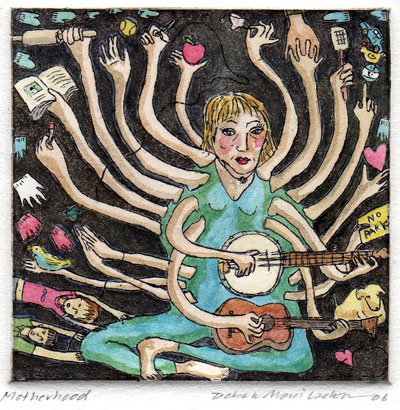

پذيرش > تریبون > گزارش كمپين > کار گروه "حق سرپرستی برای زنان" آغاز به کار کرد
 مادران پر نقش و بی حق مادران پر نقش و بی حق

 کار گروه "حق سرپرستی برای زنان" آغاز به کار کرد کار گروه "حق سرپرستی برای زنان" آغاز به کار کرد
16 دی 1387 - کارگروه حق سرپرستی برای زنان - نسخه قابل چاپ
تغییر برای برابری
کارگروه سرپرستی، گرد آوری و تهیه : ناهید میرحاج ، ناهید جعفری، مریم زندی و مینا مانی
"برای خرید یک اسباب بازی (پلی استیشن) این دومین باراست که به اداره سرپرستي مراجعه می کنم قاضی گفته باید خود بچه بیاید تا واقعا بدانم که چرا این اسباب بازی را میخواهد؟"
"برای خرید کامپیوتر به اداره سرپرستی مراجعه کردم قاضی می گوید: واقعا دستگاه را برای پسرت می خواهی مطمئن باشم برای دخترت (که حکم رشد دارد) نمی خواهی ؟"
"اجازه ندارم با فرزندم به خارج ِکشوربروم . یک هفته است در دادگاه به دنبال اجازه پدری هستم که سال هاست غیبش زده !"
"برای باز کردن حساب بانکی (ازپول خودم ) برای فرزندانم باید جوابگوي اداره سرپرستی باشم ."
"بعد ازمرگ همسرم ، پدرو برادرمعتادش همه اموال مان را دود هوا کرده اند. حالا من مانده ام با سه بچه که در خانه اجاره ای زندگی می کنیم."
...

حق ولایت و سرپرستی و مادرانی که بهشت زیر پایشان خراب می شود
نوشته های بالا گوشه هایی از درد دل های زنانی است که زیر سایه قوانین مربوط به سرپرستی بی حقوقی را تجربه می کنند.زنانی که نقش پررنگی در خانه و خانواده دارند اما حقی ندارند.
قانون مدنی می گوید طفل صغیر و مجنون تحت ولایت قهری یا سرپرستی پدر و جد پدری اش است (ماده 1180) واساسا ولایت فرزندان صغیر با پدر و جد پدری است (ماده1181).
داشتن حق ولایت برای پدر و جد پدری حقوق زیادی را به پدران داده و از مادران می ستاند. طبق همین قانون، پدر و جد پدری کلیه امور مالی ومربوط به اموال کودک را بر عهده دارند.(1183و 1194)
تصمیم گیری برای امور مالی کودک با مادر نیست. به طور مثال مادرمی تواند برای فرزندش دفترچه پس انداز باز کند اما نمی تواند برداشت کند.
مادرمی تواند فرزندش را تر و خشک کرده وبزرگ کند اما برای کوچک ترین عمل جراحی که ممکن است به حیاتش بستگی داشته باشد اختیاری ندارد.
حق ولایت حق دیگری را در قوانین مدنی و مجازات اسلامی برای پدر یا جد پدری ایجاد می کند. پدر یا جد پدری حق تنبيه طفل خود را دارند ولي به استناد اين حق نمي توانند طفل خود را خارج از حدود تاديب، تنبيه کنند(ماده 1179 قانون مدني) در عین حال با همین حق پدر يا جد پدري اگر فرزندشان را چه پسر و چه دختر بكشند قصاص نمي شوند و تنها به پرداخت ديه قتل به ورثه مقتول محکوم و تعزيرمی شوند.(ماده 220 قانون مجازات اسلامي)
جنسیت فرزند هم بر میزان ولایت بر او تاثیر دارد. ولایت دختران درهنگام ازدواج حتی در سن کبیربا پدر و جد پدری است. به عبارت دیگر اگر دختری در سن 50 سالگی هم باشد برای آنکه بخواهد ازدواج کند باید از پدر یا جد پدری اجازه بگیرد. با همین حق ولایت ، پدرمی تواند دخترش را درکودکی هم شوهردهد.
پس از جدایی زن و مرد نیز دختر وپسر تا هفت سالگی در حضانت مادرهستند. مادربا چنین حقی وظیفه نگهداری فرزند را برعهده دارد اما تامین هزینه زندگی فرزند، تصمیم گیری برای امور مالی کودک با مادر نیست. در صورت جدایی پس ازهفت سالگی نیز مادر حق حضانت بر فرزندان بالاتر از 7 سال را نیز ندارد. به عبارت دیگر مادرهرگز حق سرپرستی بر فرزندانش را ندارد. و حق حضانت هم فقط تا 7 سالگی با مادر است. بعد از هفت سالگی نیز در صورت بروز اختلاف ،حضانت طفل با رعایت مصلحت کودک با دادگاه است. (1169) البته این را هم در نظر داشته باشید که چنانچه مادردر دورانی که کودک در حضانت اوست با مرد دیگری ازدواج کند حضانت از او سلب می شود و برعهده پدر خواهد بود. (1170)
حضانت می تواند به مادرواگذار شود اگر چه ولایت با او نباشد یعنی در صورت فوت پدر یا طلاق، سرپرستی و نگهداری از کودک می تواند به عهده مادرگذارده شود. اما حضانت تنها پرستاری از طفل است و اگر مادری بخواهد پس از طلاق یافوت همسر، اختیار دار همه امورفرزندش از جمله اموال او باشد باید قیمومیت او را برعهده بگیرد که طبق قانون زن نمی تواند بدون رضایت شوهر خود سمت قیمومیت را قبول کند. (ماده 1233 قانون مدنی)
این ها گوشه هایی است از حق سرپرستی برای مردان است که به نظر ساده و بیهوده می آید ولی به هنگام بروز مشکل تبعیضات قانونی را آشکار می کند. بخصوص مسئله سرپرستی برای زنان در آستانه طلاق یا زنانی که شوهرانشان را از دست می دهند به شدت خطر آفرین می شود. چرا که هم در هنگام طلاق و هم هنگام مرگ همسر، مهمترین دغدغه زن که حفظ، تداوم و ادامه رابطه با فرزند و نحوه نگهداری و سرپرستی اوست اضطراب زنان را دو چندان می کند.
معمولا مادر تمایل دارد که هر طور که صلاح می داند مدیریت زندگی را بر عهده داشته و از اموالی که اززندگی مشترک برایش باقی مانده برای گذران زندگی و تامین آینده هزینه کند اما قانون حتی قدرت این برنامه ریزی را نیز از مادر سلب می کند. به طوری که مادر حتی برای زندگی خودش هم اختیار دار نیست.
به عنوان نمونه : زهرا زنی که دو سال پس از طلاق قصد ازدواج دارد می گوید: دخترم با من زندگی می کند و 4 سال دارد. شوهرم هم بعد از طلاق ازدواج کرد حال که من می خواهم ازدواج کنم باید بین دختر و همسر آینده یک نفر را انتخاب کنم . او برای آن که هر دو را داشته باشد تن به ازدواج موقت داده است. بنابراین می بینیم که قانون فراتر از میل و تمایل عاطفی و انسانی پدرو مادر وکودک عمل کرده و تبعیض آشکاری را بین حق زن و مرد قائل شده است.
طبق قانون حدود سرپرستی مادران بر کودکان مراقبت های پزشکی، بهداشتی و دخالت در امورآموزشی و تربیتی اطفال را شامل می شود . ولی آیا نباید پرسید که مادری که در تشکیل وادامه یک زندگی سهم مساوی بر عهده دارد چگونه درسرپرستی و اداره امور کودک اختیاری ندارد؟ قانون به صراحت اختیار مالی را از مادر سلب کرده وبه جد پدری، عمو، اداره سرپرستی و یا هر کس را که قاضی صلاح بداند می دهد یعنی به هرکسی جزمادر!.
کارگروه حق سرپرستی برای زنان
سال هاست فعالان جنبش زنان از تبعیضات ناشی از" قانون سرپرستی " علیه زنان می گویند، بیش از دو سالی که درباره مطالبات کمپین و مشکلات حقوقی زنان با آنان صحبت می کنیم بیش از گذشته با مصائب این قانون رو به رو می شویم. هنگام جمع آوری امضا یا برگزاری کارگاه های آموزشی وقتی درباره قانون سرپرستی حرف می زدیم بسیاری اززنان نا آشنا به این قانون یا آسیب دیده و زخم خورده از آن بودند و وقتی سخن می گفتند می دیدیم که زیر این پوسته شهر گاه آرام چه فریادهایی در گلو خاموش می شود. تشکیل کارگروه " حق سرپرستی برای زنان " را در ادامه تشکیل کارگروه های موضوعی و مرتبط با خواسته های کمپین ضروری دیدیم. ما که بیشترمان مادران کمپینی هستیم در صدد برآمدیم که مطالعه جدی تری را درباره تاثیرات این قانون ناعادلانه آغاز کنیم و به طور منسجم تری به جمع آوری تجربیات، نظرات و پیشنهادات زنان درباره ضرورت تغییر این قانون بپردازیم. از زنان و مادرانی که علاقه مند به فعالیت دراین زمینه بودند دعوت به همکاری کرده و نخستین جلسه این کارگروه را نیز تشکیل دادیم.
این کارگروه در نظر دارد همچون کارگروه های ارث وسن و همچنین همراه با کارگروه های جمع آوری امضا در جمع آوری امضا و گفتگوی چهره به چهره با زنان و مردان، به فعالیت های پژوهشی و حقوقی در زمینه سرپرستی بپردازد. سایر کمپینی ها به ویژه زنان و مادران و علاقه مندان به فعالیت در کارگروه "حق سرپرستی برای زنان " می توانند به این کارگروه بپیوندند.
رنج های نانوشته ولی لمس شده مادران و زنان
من واداره سرپرستی
"من و شوهرم در زندگی زناشویی اصلا " مشکل مالی نداشتیم اما بعد ازفوت نابهنگام همسرم من ماندم واداره سرپرستی زیرا که تمام اقوام همسرم خارج از کشور بودند و پدرو مادرش هم فوت کرده بودند. برای خرید هر چیز کوچک بچه هایم باید به اداره سرپرستی بروم با هر بار رفتن و اجاره گرفتن ها هفته ها حال روحی من خراب می شود ناراحتی اعصاب گرفته ام . "
من و پدر همسرم
مادری می گوید: "ازهنگامی که همسرم در حین کارسکته کرده وبلافاصله در گذشت ، نه سال می گذرد در این سال ها کارکرده و اجاره خانه را داده ام .فرزندم را بزرگ کردم حالا تا نه شب کارمی کنم تا مخارج دبیرستانش را هم تامین کنم و دراین سال ها پدر همسرم اجازه نداد که به اموالمان دست بزنم و همیشه می گوید حال موقع فروش زمین ها نیست."
من و همسر غایب
"برای رفتن به خارج از کشور هر بارمجبورم که یک یا دو هفته ای وقت بگذارم مرخصی بگیرم به دادگاه بروم و اجازه خروج فرزندم را بگیرم باید ازپدری اجازه خروج بگیرم که نیست. سال هاست که ناپدید شده و ایرانی نیست اما من باید این حقارت را تحمل کنم. از پدری استعلام کنند و اجازه بگیرم که اصلا ایرانی هم نیست."
من و دادگاه
"هر بارپسرکوچکم اسباب بازی می خواهد چون خارج از مخارج مان است من باید این بچه را از مدرسه رفتن بیندازم و به اداره سرپرستی ببرم وپیش قاضی گردن کج کنیم که اجازه دهد از پول خود بچه برایش چیزی بخرم دراین رفت وآمدها صد بارخودم را لعنت می کنم. "
راه چاره چیست ؟
هر گونه شک و تردید در صلاحیت مادر برای نگهداری ، اداره و مدیریت اموال به جا مانده از زندگی مشترک (و برای سرپرستی و اداره همه جانبه کودک ) بی انصافی ، اجحاف و ظلم آشکار به مادر است.
سرپرستی ، حضانت واداره همه جانبه کودکان حقی است مساوی برای پدرو مادرو درصورت فوت یا فقدان هر کدام از آن ها دیگری ازهرشخصی به فرزند نزدیک تراست. رفع تبعیض در این مورد جز با تصویب قانونی که به صراحت این حق را در صورت فوت یا فقدان مرد به زن واگذار کند امکان پذیر نیست.
ارسال به
بالاترین
،
توییتر
،
فریندفید
،
فیسبوک
در همين بخش :
 دهمین دورۀ مراسم تندیس صدیقه دولت آبادی ۱۳۹۲ دهمین دورۀ مراسم تندیس صدیقه دولت آبادی ۱۳۹۲
کارت پستالهایی به بهانهی هشت مارس و به یاد همهی مبارزین راه برابری
بیانیه بیش از 350 تن از مدافعان حقوق زنان به مناسبت روز جهانی زن؛ زنان هر روز فرودستتر میشوند
لباسی که برای تن ما دوخته اند! /اعظم بهرامی
چالشها و چشمانداز فعالیت مدنی زنان
ديگر بخش ها :
طرح یک میلیون امضا
|
مقالات
|
سایت نوشته ها
|
اخبار
|
گزارش كمپين
|
گفت و گو
|
علیه سکوت
|
كوچه به كوچه
|
نامه های شما
|
گزارش ویژه
|
گفتگو با اعضا
|
ویژه سالگرد کمپین
|
تصویر برابری
|
دل آرام علی
|
تریبون
|
مقالات
|
تاریخ شفاهی
|
خارج از چارچوب
|
کتابخانه
|
درباره کمپین
|
کمپین در شهرها
|
کمپین در بند
|
صدای تغییر
|
ویژه 22 خرداد
|
لایحه حمایت از خانواده
|
گالری
|
عشا مومنی
|
امیر یعقوبعلی
|
خدیجه مقدم
|
راحله عسگری زاده و نسیم خسروی
|
پروین اردلان،جلوه جواهری، مریم حسین خواه، ناهید کشاورز
|
زینب پیغمبرزاده
|
سعیده امین، سارا ایمانیان، محبوبه حسین زاده، ناهید کشاورز و همایون نامی
|
احترام شادفر
|
نسیم سرابندی زاده،فاطمه دهدشتی
|
وبلاگ مهمان
|
پرونده خرم آباد
|
دستگیری ها
|
مریم مالک
|
پرستو اللهیاری
|
مهرنوش اعتمادی
|
سمیه رشیدی
|
Other Languages
|
همراهان
|
«فراخوان کمپین ده روز با بهاره هدایت»
| English
|